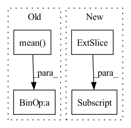

Pattern ID :942
Before Change
if self.proj is not None and self.pre_proj:
x = self.proj(x)
x = x.mean( -2) / x_len.float().unsqueeze(-1)
if self.proj is not None and not self.pre_proj:
x = self.proj(x)After Change
x = self.pre_proj(x)
if x_len is not None:
x = [x[b, : x_len[b]] .mean(0) for b in range(len(x))]
x = torch.stack(x, dim=0)
else:
x = x.mean(1)In pattern: SUPERPATTERN
Frequency: 3
Non-data size: 4
Instances Fragment ID: 2863183
Project Name: atosystem/speechclip
Commit Name: b2d7d1450922b5f68626bcc7751faf4feca14ed5
Time: 2022-03-19
Author: b06901020@ntu.edu.tw
File Name: avssl/module/pooling.py
M Class Name: MeanPoolingLayer
N Class Name: MeanPoolingLayer
M Method Name: forward(3)
N Method Name: forward(3)
M Parent Class: nn.Module
N Parent Class: nn.Module
M File Name: avssl/module/pooling.py
N File Name: avssl/module/pooling.py
M Start Line: 22
M End Line: 28
N Start Line: 46
N End Line: 58
Before Change
//// Return average loss over classes and batch
// return 1 - loss.mean()
return -(loss.mean() - 1.)
"""
def IoULoss(pred, target):After Change
loss = inter / union
//// Return average loss over classes and batch
return -(loss[:, -self.classes] .mean() - 1.)
""" Fragment ID: 2863182
Project Name: inhwanbae/enet-sad_pytorch
Commit Name: 887eb366af978823b44b4a2b477363a38214dbad
Time: 2021-07-19
Author: InhwanBae@users.noreply.github.com
File Name: utils/utils.py
M Class Name: mIoULoss
N Class Name: mIoULoss
M Method Name: forward(3)
N Method Name: forward(3)
M Parent Class: nn.Module
N Parent Class: nn.Module
M File Name: utils/utils.py
N File Name: utils/utils.py
M Start Line: 123
M End Line: 134
N Start Line: 117
N End Line: 135
Before Change
logit = logit.permute(0, 3, 1, 2)
ceReg = F.cross_entropy(logit, sample, reduction="none") * needRegMask
cePush = F.cross_entropy(logit, code, reduction="none") * (1 - needRegMask)
regs.append(ceReg.mean() + cePush.mean() )
// // [m, n, h, w] and m * list(n, h, w, k) logits and [n, k] frequencies
// for code, logit, freq in zip(codes.permute(1, 0, 2, 3), logits, codeFreq):
// // perturb code by the most rare codes with 0.1 probabilityAfter Change
sample = torch.distributions.Categorical(probs=prob).sample((h, w)).permute(2, 0, 1)
logit = logit.permute(0, 3, 1, 2)
// [n, 1, 1]
weight = freqMap / maxFreq[:, None]
ceReg = F.cross_entropy(logit, sample, reduction="none") * needRegMask * weight
cePush = F.cross_entropy(logit, code, reduction="none") * (1 - needRegMask) * weight
regs.append((ceReg + cePush).mean())
// // [m, n, h, w] and m * list(n, h, w, k) logits and [n, k] frequencies Fragment ID: 2863187
Project Name: xiaosu-zhu/mcquic
Commit Name: 49b82a18ca2e79c4b121a944f32f90e85422db22
Time: 2021-08-08
Author: xiaosu.zhu@outlook.com
File Name: src/mcqc/losses/quantization.py
M Class Name: CompressionLoss
N Class Name: CompressionLoss
M Method Name: forward(7)
N Method Name: forward(6)
M Parent Class: nn.Module
N Parent Class: nn.Module
M File Name: src/mcqc/losses/quantization.py
N File Name: src/mcqc/losses/quantization.py
M Start Line: 55
M End Line: 60
N Start Line: 43
N End Line: 71